Good Food. Rooted in Tradition. Made for Every Occasion.
Odhiur, ECR — Chennai–Pondicherry Midway
Valluvan Kudil begins with a simple idea: food is about welcoming people, sharing what we have and creating a place where people feel at home. The name is inspired by the values associated with Thiruvalluvar and the timeless wisdom of the Thirukkural — and ‘Kudil’ evokes a simple home where people come together, share a meal and feel welcome.
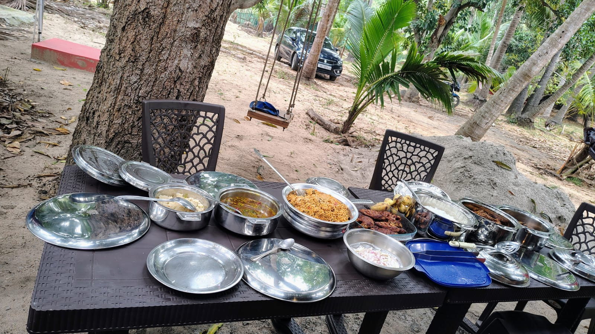
The tradition of welcoming and caring for guests through food — the one Tamil value that carries the whole idea of Valluvan Kudil.
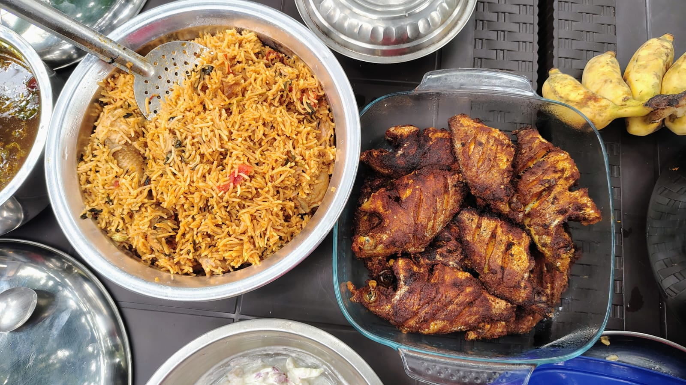
Every region has its own ingredients, cooking methods, flavours and stories. We bring them together through different food experiences.
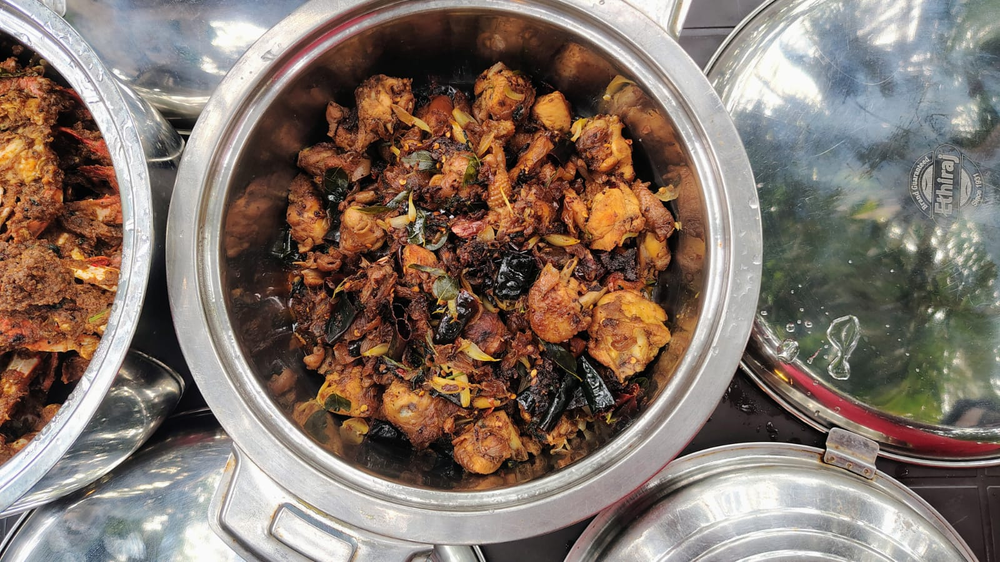
From a daily meal for a team to a gathering with family and friends, Valluvan Kudil is built around one simple idea.
Every part of Valluvan Kudil traces back to one Kural. It is not a decoration on our logo — it is the reason the brand exists.
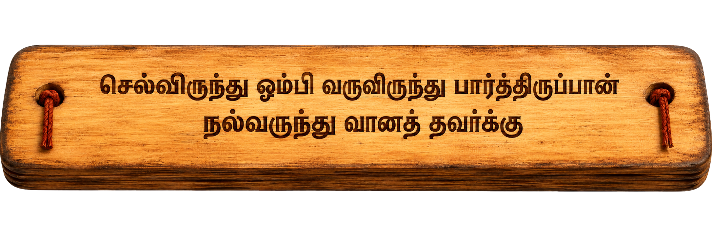
செல்விருந்து ஓம்பி வருவிருந்து பார்த்திருப்பான்
நல்விருந்து வானத் தவர்க்கு
One who cares for the guests who have arrived, and waits to welcome those still to come, will himself be a welcome guest of the heavens.
Every dining experience we design — from a family lunch to a farm feast under the trees — is our way of living out this one line of Thiruvalluvar’s wisdom.
Watch how every meal at Valluvan Kudil becomes a welcome — from the first greeting at the door to the last plate shared at the table.
Each shaped by the same philosophy of freshness, tradition and warm hospitality.
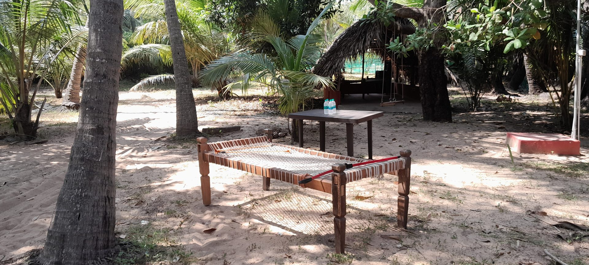
Our signature outdoor dining concept — a feast set among palms and greenery, built around fresh, custom-cooked meals and an unhurried way of eating together.
Explore Thoppu Virundhu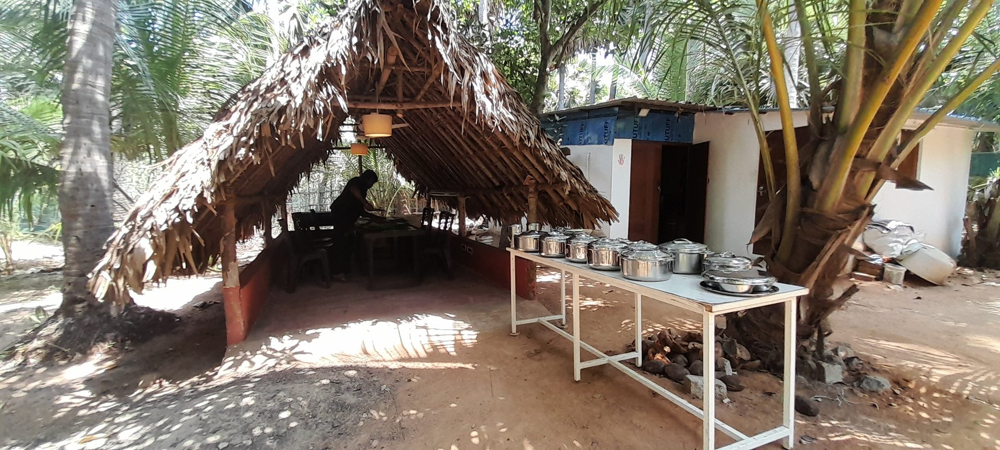
From corporate meetings to celebrations and private gatherings, customised catering solutions planned around the occasion.
See Catering Options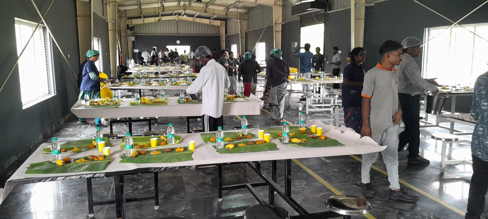
Reliable food. Managed operations. Everyday consistency — structured food service for organisations, industrial facilities and workplaces.
See Food Services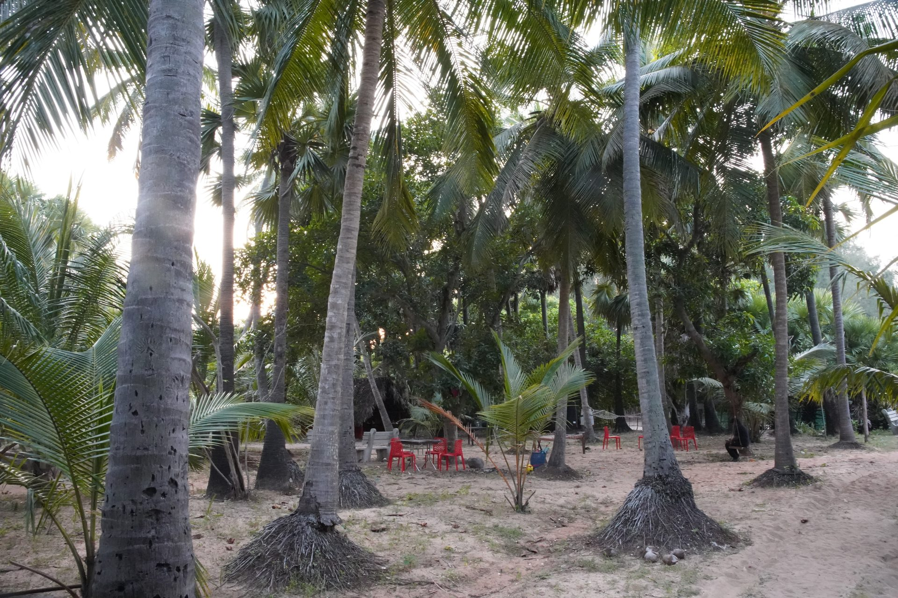
“Experience the Taste of the Tropics & Coast.” A feast in the grove, beneath tall coconut palms at Odhiur on the ECR — close to the TTDC Mudhaliyar Kuppam Boat House.
This is our house rule, not a slogan. Every order is sourced and cooked fresh for that day — so we ask guests to order today for a fresh feast tomorrow.
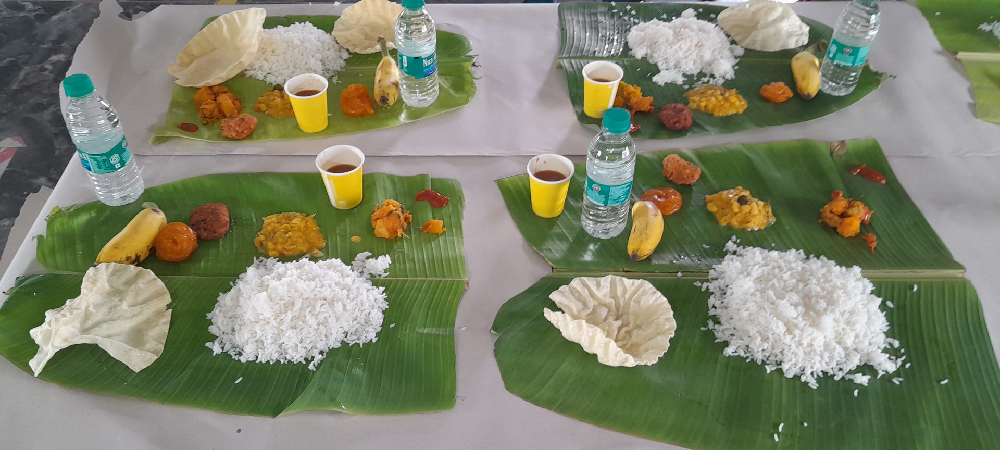
A kudil is more than a thatched roof — it is the original Tamil idea of hospitality, a simple home built to welcome guests. Seating is arranged in and around palm-thatched kudils, with the breeze of the grove flowing through.
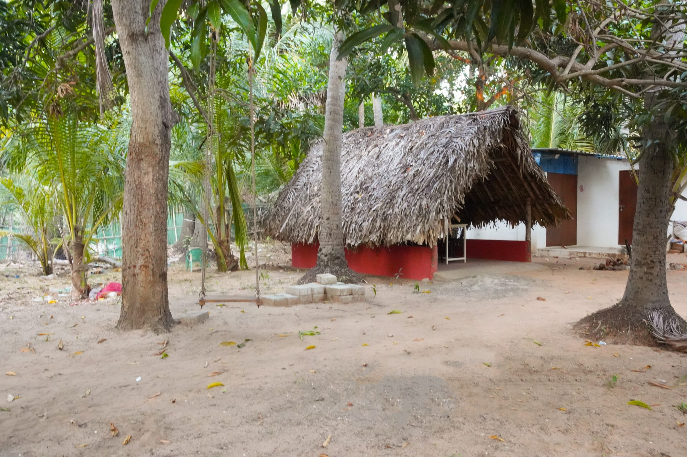
As the sun goes down over the grove, Thoppu Virundhu turns into a live barbeque evening — skewers of marinated chicken, mutton and seafood grilled fresh over open coals, right in front of you.
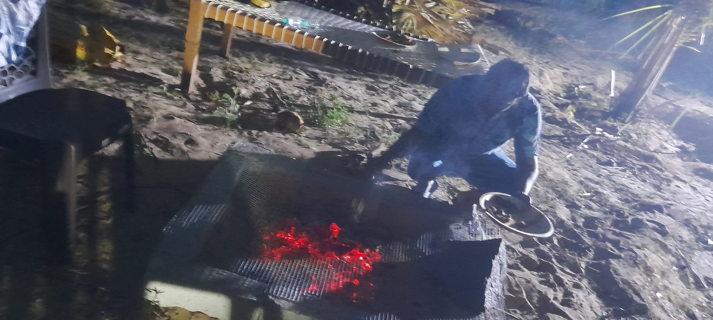
While the kitchen prepares your feast, the grove itself becomes a playground.
Slow down, play the games of a Tamil childhood and reconnect with the outdoors.
Boating on the backwaters is available on special request.
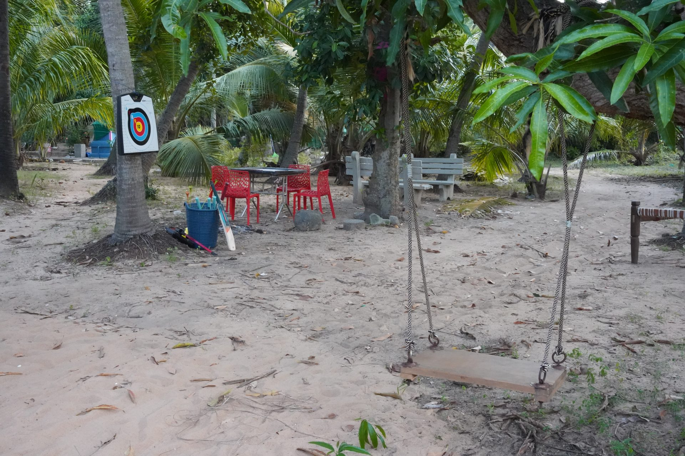
Street cricket, volleyball, football, badminton, throw ball and carrom — all with free-hand support.
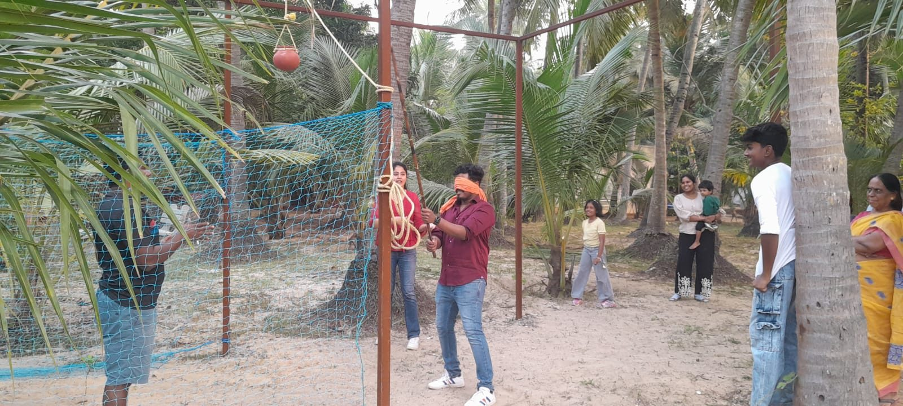
Pallanguli, Thaayam, Kitti, Goli, Snake & Ladder and the festival favourite — Pot-Breaking (Kuja Udaithal).
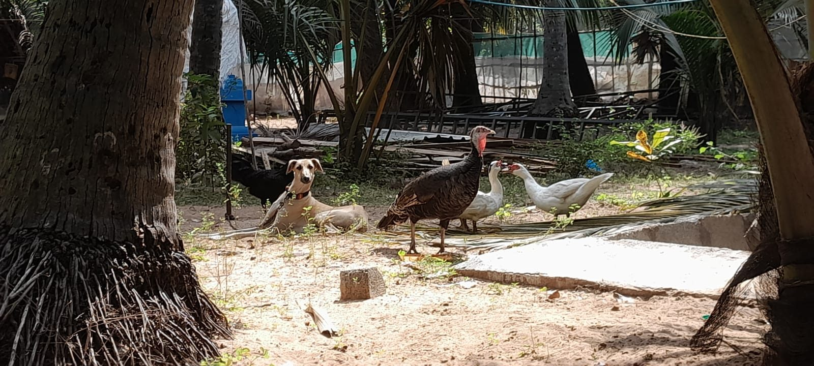
A gentle walk to the nearby backwaters, time under our 40-year-old mango tree, and our farm companions — native Sippiparai dogs, ducks, hens and cocks.
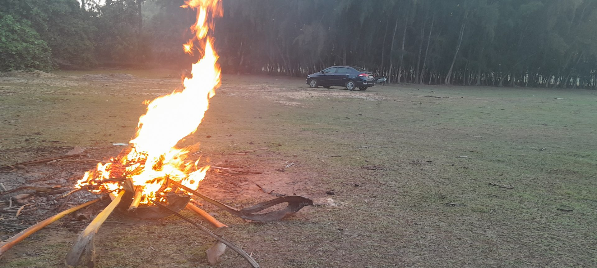
Chicken, mutton and seafood skewers grilled to order over open coals — food as theatre, with seconds always a walk away.
From corporate meetings to celebrations and private gatherings, Valluvan Kudil provides customised catering solutions based on the occasion.
Menus can be planned around the occasion, number of guests, food preferences, regional cuisine and vegetarian / non-vegetarian or specific dietary requirements.
Kitchen & Cafeteria
Management
Breakfast, Lunch & Dinner
3 Times a Day
Scheduled Snack
Services 2 Times a Day
Team Management
and Service
Menu Planning — Veg, Non-Veg,
Regional or Dietary
Quality Control &
Hygiene Compliance
Waste Management &
Sustainability
Online Food Delivery
Minimum 5 People
The service model supports on-site kitchen and cafeteria operations with a focus on smooth daily delivery and consistent food service. Online delivery comes with customised meal plans, timely and hygienic delivery and convenient group ordering — ideal for office lunches, meetings or casual gatherings.
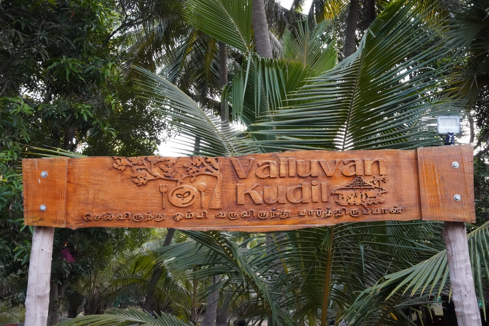
Tell us what you are planning and our team will get back to you with the right food solution. Prefer to talk? Call +91 88382 50635.